<title>London Previews</title>
<link rel="preconnect" href="https://fonts.googleapis.com"><link rel="preconnect" href="https://fonts.gstatic.com" crossorigin>
<link href="https://fonts.googleapis.com/css2?family=Fraunces:opsz,wght@9..144,600;9..144,700&family=Source+Sans+3:ital,wght@0,400;0,600;0,700;1,400&display=swap" rel="stylesheet">
<style>
:root { --bone:#F4F1EA; --bone-50:#FAF8F3; --steel:#1F3A52; --steel-900:#14202B; --steel-100:#E4EAF1; --brass:#C9A227; --brass-200:#EFE3B4;
  --bg:var(--bone); --raised:#FFFFFF; --text:#1B2430; --muted:#46566B; --rule:#DAD6CC; --head:var(--steel); --link:var(--steel); --warn-bg:#F6EBD0; --bar:var(--steel); --over:#9A4A2A; --code:#EDE8DC; }
@media (prefers-color-scheme: dark) { :root:not([data-theme="light"]) { --bg:#101922; --raised:#16222E; --text:#E9E5DB; --muted:#B6C0CC; --rule:#2B3A48; --head:#EFE3B4; --link:#EFE3B4; --warn-bg:#2C2614; --bar:#8FA3B8; --over:#E08A63; --code:#1D2B38; } }
:root[data-theme="dark"] { --bg:#101922; --raised:#16222E; --text:#E9E5DB; --muted:#B6C0CC; --rule:#2B3A48; --head:#EFE3B4; --link:#EFE3B4; --warn-bg:#2C2614; --bar:#8FA3B8; --over:#E08A63; --code:#1D2B38; }
* { box-sizing: border-box; }
body { margin:0; background:var(--bg); color:var(--text); font-family:"Source Sans 3", system-ui, sans-serif; font-size:17px; line-height:1.6; }
main { max-width:1180px; margin:0 auto; padding:24px 16px 64px; }
h1,h2,h3 { font-family:Fraunces, Georgia, serif; color:var(--head); line-height:1.2; text-wrap:balance; }
h1 { font-size:clamp(30px, 5vw, 44px); margin:4px 0 8px; }
h2 { font-size:clamp(24px, 3.4vw, 30px); margin:48px 0 12px; padding-top:16px; border-top:3px solid; border-image:linear-gradient(90deg, var(--steel), var(--brass)) 1; }
h3 { font-size:clamp(19px, 2.4vw, 22px); margin:0 0 12px; }
a { color:var(--link); }
code { background:var(--code); padding:1px 5px; border-radius:4px; font-size:.9em; overflow-wrap:anywhere; }
.eyebrow { margin:0; font-size:13px; font-weight:700; letter-spacing:.12em; text-transform:uppercase; color:var(--muted); }
.lede { max-width:75ch; color:var(--text); }
.toc { display:flex; flex-wrap:wrap; gap:8px; margin-top:12px; }
.toc a { display:inline-flex; align-items:center; min-height:44px; padding:8px 16px; border-radius:50px; background:var(--brass); color:var(--steel-900); font-weight:700; text-decoration:none; }
.opt { background:var(--raised); border:1px solid var(--rule); border-radius:20px; padding:20px 16px; margin:20px 0; }
.opt.rec { border:2px solid var(--brass); }
.badge { display:inline-block; vertical-align:middle; margin-left:6px; padding:2px 10px; border-radius:50px; background:var(--brass); color:var(--steel-900); font-family:"Source Sans 3", sans-serif; font-size:13px; font-weight:700; }
.opt p, section > p { max-width:80ch; }
.pair, .tri { display:grid; gap:12px; grid-template-columns:1fr; margin:12px 0; }
@media (min-width: 760px) { .pair { grid-template-columns:1fr 1fr; } .tri { grid-template-columns:2fr 1.2fr .7fr; align-items:start; } }
figure { margin:0; min-width:0; }
figure img { display:block; width:100%; height:auto; border-radius:12px; border:1px solid var(--rule); background:var(--bone-50); }
.tri figure img { max-height:900px; object-fit:cover; object-position:top; }
figcaption { font-size:14px; color:var(--muted); margin-top:4px; }
.warn { background:var(--warn-bg); border-left:3px solid var(--brass); padding:12px 16px; border-radius:8px; }
.small { font-size:15px; color:var(--muted); }
details.diff { margin-top:12px; border:1px solid var(--rule); border-radius:12px; padding:8px 12px; background:var(--bg); position:relative; }
details.diff summary { cursor:pointer; font-weight:700; min-height:32px; display:flex; align-items:center; }
details.diff pre { overflow:auto; font-size:13px; line-height:1.45; white-space:pre; max-height:520px; margin:8px 0 0; }
button.copy { position:absolute; top:6px; right:8px; min-height:36px; padding:4px 14px; border-radius:50px; border:2px solid var(--steel); background:var(--raised); color:var(--text); font:600 14px "Source Sans 3", sans-serif; cursor:pointer; }
.bars { background:var(--raised); border:1px solid var(--rule); border-radius:12px; padding:12px; }
.bars-t { margin:0 0 8px; font-weight:700; }
.bar { display:grid; grid-template-columns:120px 1fr 90px; gap:8px; align-items:center; font-size:14px; }
.bt { position:relative; height:14px; background:var(--code); border-radius:4px; }
.bf { position:absolute; inset:0 auto 0 0; background:var(--bar); border-radius:4px; }
.bf.over { background:var(--over); }
.cap { position:absolute; top:-3px; bottom:-3px; width:2px; background:var(--brass); }
.bv { text-align:right; font-variant-numeric:tabular-nums; }
.stack-table { width:100%; border-collapse:collapse; background:var(--raised); border-radius:12px; overflow:hidden; font-size:15px; }
.stack-table th { background:var(--steel); color:#F4F1EA; text-align:left; padding:10px; }
.stack-table td { padding:10px; border-top:1px solid var(--rule); vertical-align:top; }
@media (max-width: 640px) { .stack-table thead { display:none; } .stack-table tr { display:block; border-top:2px solid var(--brass); } .stack-table td { display:block; border:0; padding:4px 10px; } .stack-table td::before { content:attr(data-label); display:block; font-size:12.5px; font-weight:700; text-transform:uppercase; letter-spacing:.08em; color:var(--muted); } .bar { grid-template-columns:96px 1fr 72px; font-size:13px; } }
</style>
<main>
<header class="top">
  <p class="eyebrow">BlueStaffyUK · London location page · preview only</p>
  <h1>London Previews</h1>
  <p class="lede">Previews of the mid-page CTA, the puppy-card redesign and fixes for the four layout defects the city render gate failed. Nothing has been applied to <code>src/</code>, <code>data/</code> or <code>public/</code>. Every screenshot is a copy of <code>dist/</code> (built 2026-10-04) with CSS or HTML injected in the browser. Every gate figure below comes from the gate's own in-page checks (<code>tests/render/lib/cityTypeFit.ts</code> and the hero probe from <code>city-kit.spec.ts</code>), run on that injected page. The exact diffs are in <a href="diffs.md">diffs.md</a>, and each option repeats its diff below with a copy button.</p>
  <nav class="toc"><a href="#cta">1 · Mid-page CTA</a><a href="#cards">2 · Puppy cards</a><a href="#fixes">3 · Layout fixes</a><a href="#gate">Gate summary</a></nav>
</header>

<section id="cta">
  <h2>1 · Mid-page call to action</h2>
  <p>Roughly 5,000 words separate the hero button from the form today. The board already plans four enquiry lines (links plan M2, "about every 600 words"), at the ends of the deposit, litter, paperwork and temperament chapters. On the page they show as underlined text, so nobody sees them as calls to action.</p>

  <article class="opt rec">
    <h3>CTA-1 · The four existing enquiry lines become brass pills <span class="badge">Recommended</span></h3>
    <div class="pair"><figure><a href="cta1-375-before.jpg">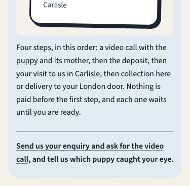</a><figcaption>Before, 375px: the deposit chapter ends on an underlined sentence</figcaption></figure><figure><a href="cta1-375-preview.jpg">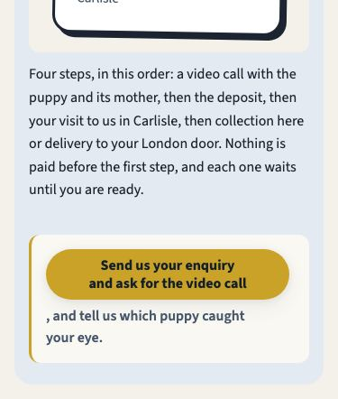</a><figcaption>CTA-1, 375px: the same sentence, its link now a brass pill on a bone card ruled in brass</figcaption></figure></div>
    <div class="pair"><figure><a href="cta1-1280-before.jpg">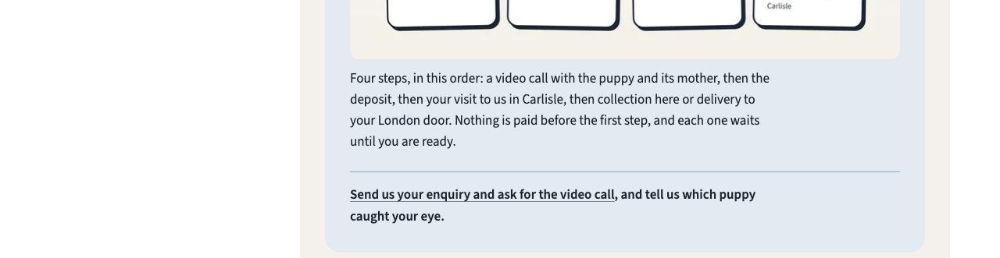</a><figcaption>Before, 1280px</figcaption></figure><figure><a href="cta1-1280-preview.jpg">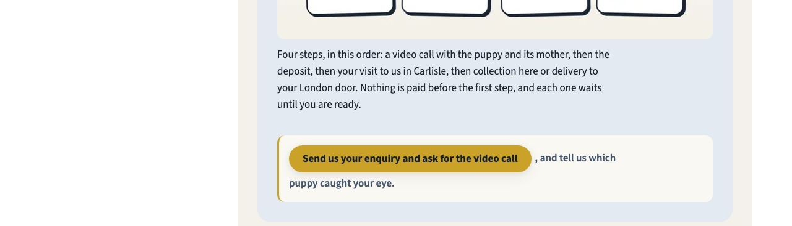</a><figcaption>CTA-1, 1280px</figcaption></figure></div>
    <figure><a href="cta1b-1280-preview.jpg"></a><figcaption>CTA-1, 1280px: the litter chapter close, "Ask about a puppy from this litter"</figcaption></figure>
    <p><b>Why.</b> No words are added and no links are added. The pill wraps the board's own <code>#enquiry</code> anchors, so working rule 6 (a redesign adds or removes no content) and rule 12 (every link on the board) both hold, and rules/design.md rule 3 makes every CTA the <code>--color-cta</code> pill. The page then has a button at four points spread through the long middle. <b>Trade-off.</b> These anchors were written as sentence openers. On a phone the pill wraps to two lines, and the rest of the sentence ("…, and tell us which puppy caught your eye.") starts with a comma under the pill. Rewording would avoid that, but rewording is a board change. Gate effect: no new defect at 375 or 1280 (defect count 9 → 9 and 11 → 11), and every pill is at least 44px tall.</p>
    <details class="diff"><summary>The exact diff (CTA-1)</summary><button class="copy" type="button" data-copy>Copy markdown</button><pre>## CTA-1: the four existing enquiry lines become brass pills (Recommended)

No new words and no new links. The four `#enquiry` sentences already on the approved board
(sections 7, 9, 13 and 16: &quot;Send us your enquiry and ask for the video call&quot;, &quot;Ask about a
puppy from this litter&quot;, &quot;Ask us for the full terms before you reserve&quot;, &quot;Tell us about your
London home and household&quot;) already close the deposit, litter, paperwork and temperament
chapters. Only their styling changes.

`src/components/kit/CityChapters.astro`, inside `@layer components`:

```diff
-    .close { padding-top: var(--space-4); border-top: 1px solid var(--color-steel-300); }
-    .close :global(p) { margin: 0; font-weight: 600; }
+    /* THE CHAPTER&#x27;S CLOSING LINE IS ITS CALL TO ACTION (London previews 2026-10-04, CTA-1): the
+       sentence&#x27;s link, always its first child (links-plan M2, sentence_start), is the brass pill
+       (rules/design.md rule 3); the rest of the sentence follows it, in ink-2 on a bone-50 card
+       ruled in brass. Words and hrefs are the board&#x27;s, unchanged. */
+    .close { margin-top: var(--space-3); padding: var(--space-4); border-radius: var(--radius-md);
+      background: var(--color-bone-50); border-left: 3px solid var(--color-cta); }
+    .close :global(p) { margin: 0; font-weight: 600; color: var(--color-ink-2); line-height: 1.5; }
+    .close :global(p &gt; a:first-child) {
+      display: inline-flex; align-items: center; min-height: 44px; padding: var(--space-2) 22px;
+      margin: 0 6px 6px 0; border-radius: var(--btn-radius); background: var(--color-cta);
+      color: var(--color-cta-ink); font-weight: 700; line-height: 1.25; text-wrap: balance;
+      text-align: center; text-decoration: none; box-shadow: var(--shadow-card);
+      transition: background-color var(--dur-fast) var(--ease-out), transform var(--dur-fast) var(--ease-out);
+    }
+    .close :global(p &gt; a:first-child:hover) { background: var(--color-cta-hover); transform: translateY(-1px); }
+    .close :global(p &gt; a:first-child:focus-visible) { outline: 3px solid var(--kit-ring); outline-offset: 2px; }
+    @media (prefers-reduced-motion: reduce) {
+      .close :global(p &gt; a:first-child) { transition: none; }
+      .close :global(p &gt; a:first-child:hover) { transform: none; }
+    }
```

Note: `city.css` underlines paragraph links (`.city-kit :where(p:not(form *)) a`). The scoped
`text-decoration: none` above wins because it is a scoped class rule inside the same layer.
Re-check this after the build, and add `.close` to the underline rule&#x27;s exclusions if it does not win.</pre></details>
  </article>

  <article class="opt">
    <h3>CTA-2 · One next-step band after Rachel L.'s letter</h3>
    <div class="pair"><figure><a href="cta2-375-before.jpg">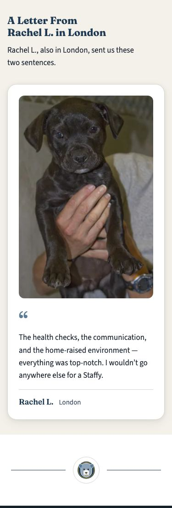</a><figcaption>Before, 375px: the review leads straight into the middle FAQ</figcaption></figure><figure><a href="cta2-375-preview.jpg">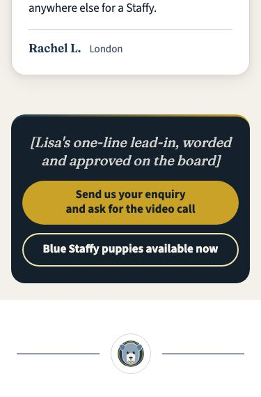</a><figcaption>CTA-2, 375px: a steel-900 band with two full-width pills</figcaption></figure></div>
    <div class="pair"><figure><a href="cta2-1280-before.jpg">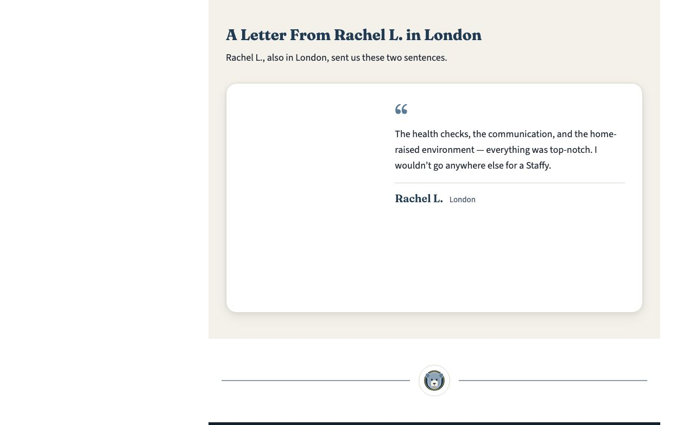</a><figcaption>Before, 1280px</figcaption></figure><figure><a href="cta2-1280-preview.jpg">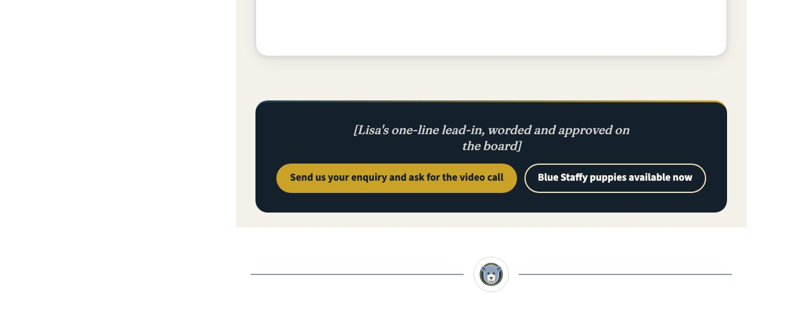</a><figcaption>CTA-2, 1280px</figcaption></figure></div>
    <p><b>Why.</b> It is the loudest option. It sits at the page's midpoint, straight after social proof, and offers both next steps (enquire, or see the puppies) in one place. <b>Trade-off.</b> It is new content. It adds a section, a lead-in line the breeder has to write (the bracketed text is a placeholder and stays one until she writes it), a new kit component under the rule-16 component gate, and two anchors that repeat ones already on the page (the hero's and section 7's). Gate effect: no new defect.</p>
    <details class="diff"><summary>The exact diff (CTA-2)</summary><button class="copy" type="button" data-copy>Copy markdown</button><pre>## CTA-2: one new next-step band after Rachel L.&#x27;s letter (#review-middle)

This adds a section, so it is a content change. It needs a board row, its two links on the
board (both targets are already there), and the lead-in line written by the breeder. It also
needs a new kit component, so `data/design/components.json`, `src/components/kit/_registry.ts`
and the rule-16 component gate all change.

New file `src/components/kit/CityNextStep.astro`:

```astro
---
// src/components/kit/CityNextStep.astro: the mid-page next step (London previews 2026-10-04,
// CTA-2). One steel-900 panel with a seam-gradient top rule, a lead-in line written on the board,
// and two pills: brass (#enquiry) and an outline on inverse (/available-puppies/). Both links are
// on the approved board, so this component adds no href of its own.
import &#x27;../../styles/city.css&#x27;;
import type { HTMLAttributes } from &#x27;astro/types&#x27;;
type Props = HTMLAttributes&lt;&#x27;section&#x27;&gt; &amp; { lead: string; primary: { label: string; href: string }; secondary: { label: string; href: string } };
const { lead, primary, secondary, class: cls, ...rest } = Astro.props;
---
&lt;section {...rest} class:list={[&#x27;city-kit&#x27;, &#x27;city-next-step&#x27;, cls]}&gt;
  &lt;div class=&quot;in on-inverse&quot;&gt;
    &lt;p class=&quot;lead&quot;&gt;{lead}&lt;/p&gt;
    &lt;div class=&quot;row&quot;&gt;&lt;a class=&quot;pill&quot; href={primary.href}&gt;{primary.label}&lt;/a&gt;&lt;a class=&quot;ghost&quot; href={secondary.href}&gt;{secondary.label}&lt;/a&gt;&lt;/div&gt;
  &lt;/div&gt;
&lt;/section&gt;
&lt;style&gt;
  @layer components {
    .city-next-step { background: var(--color-surface); padding: var(--space-5) 0; }
    .in { max-width: min(1100px, calc(100% - 2 * var(--space-4))); margin: 0 auto; padding: var(--space-5) var(--space-4);
      border-radius: var(--radius-lg); text-align: center; color: var(--color-text-on-inverse); border-top: 3px solid transparent;
      background: linear-gradient(var(--color-surface-deep), var(--color-surface-deep)) padding-box, var(--seam-gradient) border-box; }
    .lead { margin: 0 auto var(--space-4); max-inline-size: 40ch; font-family: var(--font-display); font-size: var(--text-lg); line-height: 1.3; color: var(--color-text-on-inverse); }
    .row { display: flex; flex-wrap: wrap; justify-content: center; gap: var(--space-3); }
    a { display: inline-flex; align-items: center; justify-content: center; min-height: 48px; padding: 10px 22px; border-radius: var(--btn-radius);
      font-weight: 700; line-height: 1.25; text-wrap: balance; text-decoration: none;
      transition: background-color var(--dur-fast) var(--ease-out), transform var(--dur-fast) var(--ease-out); }
    .pill { background: var(--color-cta); color: var(--color-cta-ink); }
    .pill:hover { background: var(--color-cta-hover); transform: translateY(-1px); }
    .ghost { color: var(--color-text-on-inverse); box-shadow: inset 0 0 0 2px var(--color-link-on-inverse); }
    .ghost:hover { background: var(--color-surface-inverse); transform: translateY(-1px); }
    a:focus-visible { outline: 3px solid var(--color-focus-on-inverse); outline-offset: 2px; }
    @media (prefers-reduced-motion: reduce) { a { transition: none; } a:hover { transform: none; } }
    @container (width &lt; 520px) { .row a { flex: 1 1 100%; } }
    @container (width &gt;= 640px) { .in { max-width: min(1100px, calc(100% - 2 * var(--space-6))); padding: var(--space-6) var(--space-5); } }
  }
&lt;/style&gt;
```

(The `.ghost` ring is an inset box-shadow used as a 2px border, not a shadow. If
`tests/py/test_design_tokens.py` reads it as a hand-written shadow, write it as
`border: 2px solid var(--color-link-on-inverse)` with the padding 2px smaller.)

`src/pages/uk-locations/blue-staffy-puppies-london.astro`, straight after the `#review-middle` `CityLetter`:

```diff
+  &lt;SectionDivider /&gt;
+  &lt;CityNextStep id=&quot;next-step&quot; data-section-label=&quot;[board label]&quot;
+    lead=&quot;[Lisa&#x27;s one-line lead-in, worded and approved on the board]&quot;
+    primary={{ label: &#x27;Send us your enquiry and ask for the video call&#x27;, href: &#x27;#enquiry&#x27; }}
+    secondary={{ label: &#x27;Blue Staffy puppies available now&#x27;, href: &#x27;/available-puppies/&#x27; }} /&gt;
```

The two labels reuse anchors that are already on the board (section 7 and the hero). If the
dup/anchor gates refuse a repeated anchor, the board gives this band its own anchors.

---</pre></details>
  </article>
</section>

<section id="cards">
  <h2>2 · Puppy ticket redesign</h2>
  <p>Today the six tickets carry the name, Boy or Girl, the colour and the price (component <code>CityTicketStrip.astro</code>, mounted inside the key-takeaways section). Every option below adds the delivery line (<code>deliveryLine</code>, built from <code>data/settings.json</code> as UK home delivery £200–£350 by distance · or collect in Carlisle), the breeder's confirmed trust signs plus <code>guarantee_label</code>, and a personality line. Prices come from <code>data/puppies.json</code>, checked against <code>data/price-matrix.json</code>. Nothing is typed.</p>
  <p class="warn"><b>Personality lines are DRAFTS.</b> The coordinator supplied them, written from each pup's photo, and they appear exactly as given. They are not Lisa's words. Several are about behaviour ("first to trot over…", "checking every corner of the garden fence") and a photo cannot show that. Rule 9 (no fabricated claims) means Lisa has to approve or rewrite each line on the board before any of them ships.</p>
  <div class="pair"><figure><a href="cards-375-before.jpg">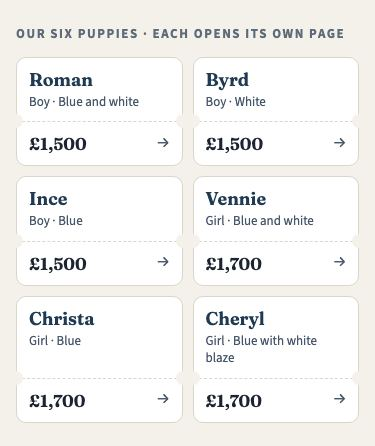</a><figcaption>Before, 375px: two tickets across</figcaption></figure><figure><a href="cards-1280-before.jpg">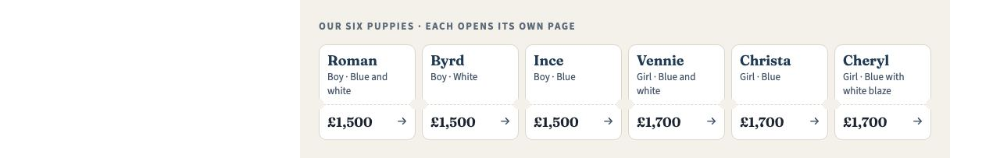</a><figcaption>Before, 1280px: one row of six</figcaption></figure></div>
  <p><b>The mount has to move.</b> Measured: if any of the three designs stays inside the takeaways section, that section breaks its height gate (375px: 3,808–4,382px against a 2,030px cap; 1280px: 1,920–2,407px against 1,280px). Each option below is mounted as its own band, straight after the takeaways. That moves the layout, not any words.</p>

  <article class="opt">
    <h3>CARD-1 · The ticket, extended (same motif)</h3>
    <div class="tri"><figure><a href="card1-1280.jpg">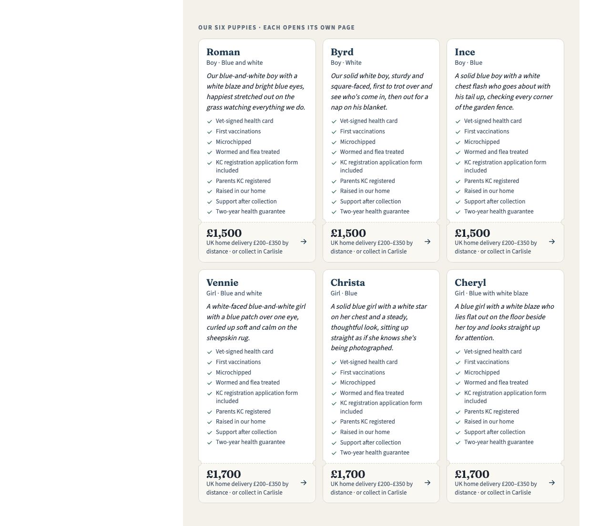</a><figcaption>CARD-1, 1280px: three across</figcaption></figure><figure><a href="card1-768.jpg">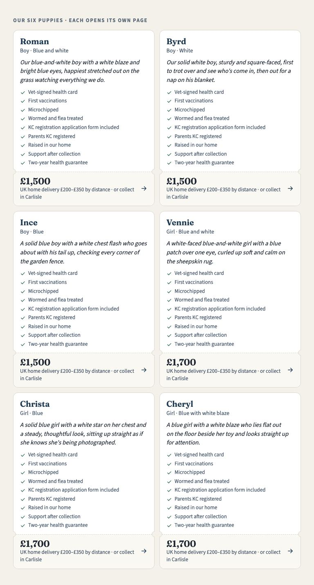</a><figcaption>CARD-1, 768px: two across</figcaption></figure><figure><a href="card1-375.jpg">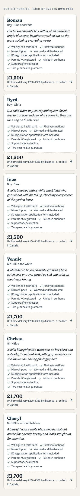</a><figcaption>CARD-1, 375px: stacked</figcaption></figure></div>
    <p><b>Why.</b> It is the approved ticket (the torn stub with its notches), grown to carry everything that was asked for. The checklist above the stub reads as "what comes with this ticket", and price plus delivery sit together on the stub. <b>Trade-off.</b> It is the plainest of the three, white on bone like the cards around it. On a phone it is 2,293px tall, 263px over the 2,030px cap. At 1280 it passes (its band is under 1,280px), and 768 has no cap.</p>
    <details class="diff"><summary>The exact diff (CARD-1)</summary><button class="copy" type="button" data-copy>Copy markdown</button><pre>## CARD-1: the ticket, extended (motif kept)

```css
.pc { background: var(--color-white); border: var(--card-border); border-radius: var(--radius-md); }
.pc-top { padding: 14px 16px 0; }
.pc-say { padding: 8px 16px 0; }
.pc-trust { padding: 10px 16px 12px; display: flex; flex-wrap: wrap; gap: 2px 12px; flex: 1; align-content: start; }
.pc-stub { position: relative; border-top: 1.5px dashed var(--color-border); padding: 10px 16px 12px; display: grid; grid-template-columns: 1fr auto;
  grid-template-areas: &quot;price go&quot; &quot;del go&quot;; align-items: center; column-gap: 8px; background: var(--color-bone-50); border-radius: 0 0 var(--radius-md) var(--radius-md); }
.pc-stub::before, .pc-stub::after { content: &quot;&quot;; position: absolute; top: -8px; width: 14px; height: 14px; border-radius: 50%; background: var(--color-surface); border: var(--card-border); }
.pc-stub::before { left: -8px; clip-path: inset(0 0 0 50%); }
.pc-stub::after { right: -8px; clip-path: inset(0 50% 0 0); }
.pc-price { grid-area: price; } .pc-del { grid-area: del; } .pc-go { grid-area: go; }
@container (width &gt;= 560px) { .grid { grid-template-columns: repeat(2, minmax(0, 1fr)); } .pc-trust { display: grid; grid-template-columns: 1fr; gap: 4px; } }
@container (width &gt;= 780px) { .grid { grid-template-columns: repeat(3, minmax(0, 1fr)); gap: 14px; } }
```</pre></details>
  </article>

  <article class="opt">
    <h3>CARD-2 · The portrait card (photo-led)</h3>
    <div class="tri"><figure><a href="card2-1280.jpg">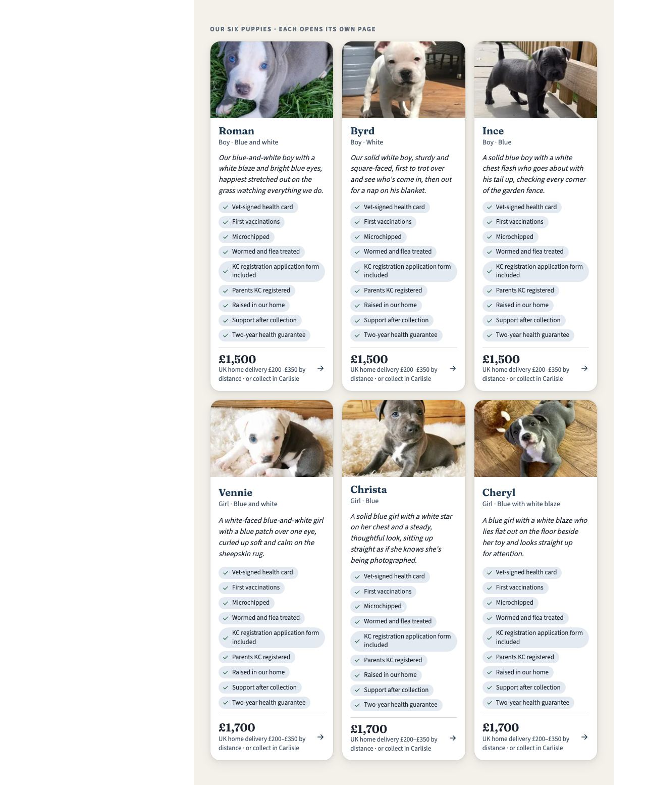</a><figcaption>CARD-2, 1280px</figcaption></figure><figure><a href="card2-768.jpg">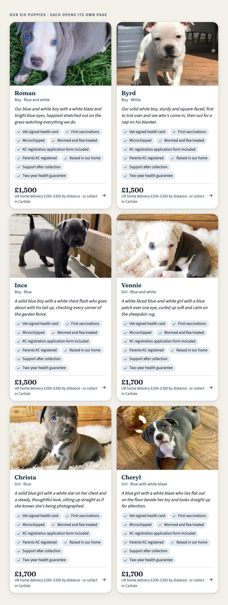</a><figcaption>CARD-2, 768px</figcaption></figure><figure><a href="card2-375.jpg">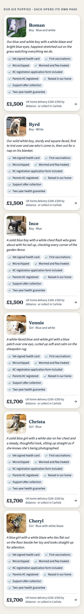</a><figcaption>CARD-2, 375px: an 88px thumbnail beside the name</figcaption></figure></div>
    <p><b>Why.</b> It looks most like a shop card, the face sells the puppy, and on a phone the photo shrinks to a thumbnail so the stack stays compact. Its alt text is <code>puppyAlt(p, 'scene')</code> (for example "Roman, a blue and white Staffy boy, lying on the grass"). That wording does not appear anywhere else on the page, which keeps working rule 11's "same photo, new alt". <b>Trade-off.</b> It is the tallest option and fails the gate at both capped widths (375: 2,736px; 1280: 1,555px). It would also be the fourth time the same six photos appear on this page (hero strip, roster, dial and contents photos). The approved ticket left the photo out on purpose.</p>
    <details class="diff"><summary>The exact diff (CARD-2)</summary><button class="copy" type="button" data-copy>Copy markdown</button><pre>## CARD-2: the portrait card (photo-led layout)

It adds the photo, with `puppyAlt(p, &#x27;scene&#x27;)` for alt text. That alt is new on this page,
so the &quot;same photo, new alt&quot; rule holds. Import `Image`, `puppyImage`, `focusClass` and
`puppyAlt`. `sizes`: `(min-width: 1280px) 243px, (min-width: 1024px) 288px, (min-width: 560px) calc(50vw - 40px), 88px`.
The painted widths this was measured against: 88px at 375, 280 at 640, 342 at 768, 286 at
1024 and 243 at 1280. Run `img-sizes-matches-box` again after the build.

```css
.pc { background: var(--color-white); border: var(--card-border); border-radius: var(--card-radius); box-shadow: var(--shadow-card);
  display: grid; grid-template-columns: 88px minmax(0, 1fr); grid-template-areas: &quot;img top&quot; &quot;say say&quot; &quot;trust trust&quot; &quot;stub stub&quot;; column-gap: 12px; padding: 12px; }
.pc-img { grid-area: img; width: 88px; height: 88px; object-fit: cover; border-radius: var(--radius-md); background: var(--color-bone-50); display: block; }
.pc-top { grid-area: top; align-self: center; }
.pc-say { grid-area: say; padding-top: 10px; }
.pc-trust { grid-area: trust; display: flex; flex-wrap: wrap; gap: 6px; padding-top: 10px; }
.pc-trust li { background: var(--color-brand-soft); border-radius: var(--radius-pill); padding: 3px 10px 3px 7px; align-items: center; color: var(--color-text); }
.pc-trust .ic { margin-top: 0; }
.pc-stub { grid-area: stub; margin-top: 12px; padding-top: 10px; border-top: var(--card-border); display: grid; grid-template-columns: auto 1fr auto; grid-template-areas: &quot;price del go&quot;; align-items: center; column-gap: 12px; }
.pc-price { grid-area: price; } .pc-del { grid-area: del; } .pc-go { grid-area: go; }
@container (width &gt;= 560px) {
  .grid { grid-template-columns: repeat(2, minmax(0, 1fr)); gap: 16px; }
  .pc { grid-template-columns: minmax(0, 1fr); grid-template-areas: &quot;img&quot; &quot;top&quot; &quot;say&quot; &quot;trust&quot; &quot;stub&quot;; padding: 0 0 14px; overflow: clip; }
  .pc-img { width: 100%; height: auto; aspect-ratio: 16 / 10; border-radius: 0; }
  .pc-top { padding: 12px 16px 0; }
  .pc-say, .pc-trust { padding-inline: 16px; }
  .pc-stub { margin: 12px 16px 0; grid-template-columns: 1fr auto; grid-template-areas: &quot;price go&quot; &quot;del go&quot;; }
}
@container (width &gt;= 780px) { .grid { grid-template-columns: repeat(3, minmax(0, 1fr)); } }
```</pre></details>
  </article>

  <article class="opt rec">
    <h3>CARD-3 · The steel pass (accent role changes) <span class="badge">Recommended</span></h3>
    <div class="tri"><figure><a href="card3-1280.jpg">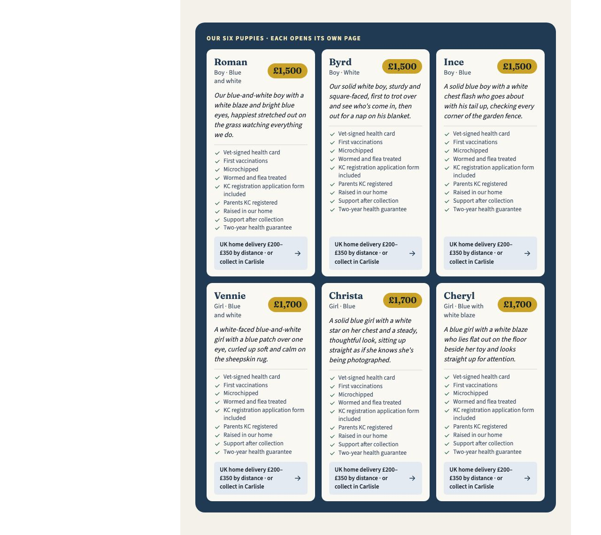</a><figcaption>CARD-3, 1280px</figcaption></figure><figure><a href="card3-768.jpg">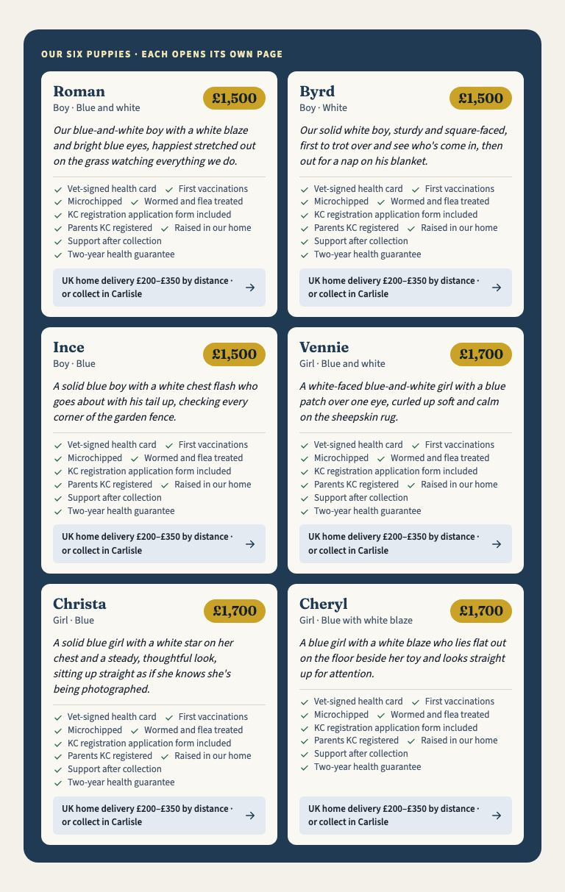</a><figcaption>CARD-3, 768px</figcaption></figure><figure><a href="card3-375.jpg">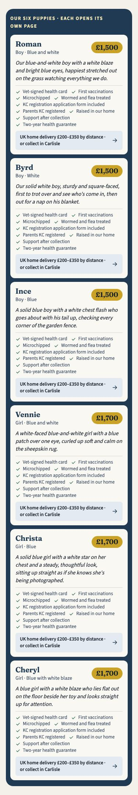</a><figcaption>CARD-3, 375px</figcaption></figure></div>
    <p><b>Why.</b> It keeps to rules/design.md's colour roles. The steel band is <code>--color-surface-inverse</code>, the price is brass used only as a fill with <code>--color-cta-ink</code> text (rule 1, and rule 3's brass signature), and brass never colours small text on bone. The change is the refresh skill's "accent" axis, applied to this one section, with no palette change. It is also the shortest of the three: 2,152px on a phone against CARD-1's 2,293 and CARD-2's 2,736, and it passes at 1280. Seen at a glance, the price chip and the delivery panel read as the answer to "how much, and how does it get to me". <b>Trade-off.</b> On a phone the band is still 122px (6%) over the 2,030px cap. Shipping it means one of: a breeder ruling to judge this band per card (each card is about 340px); dropping a sign on phones, which is a content cut and her call; or accepting the gate row. It also adds one more steel block between the steel hero and the trust ledger.</p>
    <details class="diff"><summary>The exact diff (CARD-3)</summary><button class="copy" type="button" data-copy>Copy markdown</button><pre>## CARD-3: the steel pass (accent role changes) (Recommended)

```css
.in { background: var(--color-surface-inverse); border-radius: var(--radius-lg); padding: 16px 12px; margin-block: var(--space-5); }
.grid { gap: 10px; }
.label { color: var(--color-link-on-inverse); }
.pc { background: var(--color-bone-50); border-radius: var(--radius-md); padding: 12px 14px; gap: 8px; }
.pc:focus-within { outline-color: var(--color-focus-on-inverse); }
.pc-say { font-size: var(--text-sm); line-height: 1.4; }
.pc-top { display: grid; grid-template-columns: minmax(0, 1fr) auto; grid-template-areas: &quot;name price&quot; &quot;meta price&quot;; column-gap: 10px; align-items: center; }
.pc-name { grid-area: name; } .pc-meta { grid-area: meta; }
.pc-price-chip { grid-area: price; background: var(--color-cta); color: var(--color-cta-ink); border-radius: var(--radius-pill); padding: 6px 12px; font-size: 18px; }
.pc-trust { display: flex; flex-wrap: wrap; gap: 1px 10px; padding-top: 8px; border-top: var(--card-border); }
.pc-trust li { line-height: 1.3; }
.pc-stub { display: grid; grid-template-columns: 1fr auto; align-items: center; column-gap: 8px; margin-top: auto; padding: 8px 12px; border-radius: var(--radius-sm); background: var(--color-brand-soft); }
.pc-del { color: var(--color-text); font-weight: 600; }
@container (width &gt;= 560px) { .grid { grid-template-columns: repeat(2, minmax(0, 1fr)); gap: 14px; } .in { padding: var(--space-5); margin-block: var(--city-pad-y); } .pc { padding: 14px 16px; gap: 10px; } }
@container (width &gt;= 780px) { .grid { grid-template-columns: repeat(3, minmax(0, 1fr)); } }
```

In CARD-3 the price moves into `.pc-top` as `&lt;p class=&quot;pc-price pc-price-chip&quot;&gt;`, and the stub
carries only the delivery line and the arrow.

---</pre></details>
  </article>
  <details class="diff"><summary>The exact diff (The puppy cards)</summary><button class="copy" type="button" data-copy>Copy markdown</button><pre>## The puppy cards: shared to CARD-1, CARD-2 and CARD-3

**Mount.** The strip leaves `CityTakeawaysLedger`&#x27;s default slot and becomes its own band
straight after `#key-takeaways`. Measured: mounted in place, every style pushes the takeaways
section over its height gate (375: 3,808–4,382px against a 2,030px cap; 1280: 1,920–2,407px
against 1,280px).

```diff
   &lt;CityTakeawaysLedger id=&quot;key-takeaways&quot; ... rows={takeaways}&gt;
-    &lt;CityTicketStrip /&gt;
   &lt;/CityTakeawaysLedger&gt;
+  &lt;CityTicketStrip /&gt;
```

**Data (after the breeder approves, not before).**
- `data/puppies.json`: one `personality` string per puppy. The DRAFT lines in the preview were
  supplied by the coordinator and written from the photos. They are not the breeder&#x27;s words
  until she approves them on the board. The component throws if an available puppy has none.
- `data/settings.json`: `puppy_trust_signs`, the breeder&#x27;s confirmed list, with a `_source`
  (brief 2026-10-04). The values: &quot;Vet-signed health card&quot;, &quot;First vaccinations&quot;,
  &quot;Microchipped&quot;, &quot;Wormed and flea treated&quot;, &quot;KC registration application form included&quot;,
  &quot;Parents KC registered&quot;, &quot;Raised in our home&quot;, &quot;Support after collection&quot;. The guarantee is
  appended from `guarantee_label` at render time and is never typed into the list.
- The delivery line is `deliveryLine` from `src/lib/cityKit.ts`, which already exists
  (`rules/puppies.md` `delivery-band-on-every-card`). The price is `money(p.price_gbp)`.
- `scripts/dup_content_audit.py`: the trust list and delivery line repeat six times by design.
  Whitelist them as stems, the way the delivery line already is for `PuppyCard`.

**Markup** (`src/components/kit/CityTicketStrip.astro`; one `&lt;article&gt;` per puppy, and the
name link stretched over the card so the whole card is the tap target; no heading, so the
outline is unchanged):

```astro
---
import &#x27;../../styles/city.css&#x27;;
import settings from &#x27;../../../data/settings.json&#x27;;
import { availablePuppies, money, sexWord, deliveryLine } from &#x27;../../lib/cityKit&#x27;;
import { numberWord } from &#x27;../../lib/recordText&#x27;;
const pups = availablePuppies();
const trust = [...settings.puppy_trust_signs, settings.guarantee_label];
for (const p of pups) if (!p.personality) throw new Error(`CityTicketStrip: ${p.slug} has no personality line`);
const { label = `Our ${numberWord(pups.length)} puppies · each opens its own page`, class: cls, ...rest } = Astro.props;
const CHECK = &#x27;M5 12.5l4.5 4.5L19 7.5&#x27;;
---
&lt;section {...rest} class:list={[&#x27;city-kit&#x27;, &#x27;city-ticket-strip&#x27;, cls]} data-ticket-strip&gt;
  &lt;div class=&quot;in&quot;&gt;
    &lt;p class=&quot;label&quot;&gt;{label}&lt;/p&gt;
    &lt;ul class=&quot;grid&quot;&gt;
      {pups.map((p) =&gt; (
        &lt;li&gt;&lt;article class=&quot;pc&quot; data-ticket={p.slug}&gt;
          {/* CARD-2 only: &lt;Image src={puppyImage(p.card_photo)} alt={puppyAlt(p, &#x27;scene&#x27;)} widths={[240, 400]} class={`pc-img ${focusClass(p.card_photo)}`} loading=&quot;lazy&quot; /&gt; */}
          &lt;div class=&quot;pc-top&quot;&gt;
            &lt;p class=&quot;pc-name&quot;&gt;&lt;a href={`/available-puppies/${p.slug}/`}&gt;{p.name}&lt;/a&gt;&lt;/p&gt;
            &lt;p class=&quot;pc-meta&quot;&gt;{sexWord(p)} · {p.colour}&lt;/p&gt;
            {/* CARD-3: the price sits here as the brass chip */}
          &lt;/div&gt;
          &lt;p class=&quot;pc-say&quot;&gt;{p.personality}&lt;/p&gt;
          &lt;ul class=&quot;pc-trust&quot; aria-label={`Comes home with ${p.name}`}&gt;
            {trust.map((t) =&gt; &lt;li&gt;&lt;svg class=&quot;ic&quot; viewBox=&quot;0 0 24 24&quot; width=&quot;14&quot; height=&quot;14&quot; fill=&quot;none&quot; stroke=&quot;currentColor&quot; stroke-width=&quot;2.4&quot; stroke-linecap=&quot;round&quot; stroke-linejoin=&quot;round&quot; aria-hidden=&quot;true&quot;&gt;&lt;path d={CHECK} /&gt;&lt;/svg&gt;&lt;span&gt;{t}&lt;/span&gt;&lt;/li&gt;)}
          &lt;/ul&gt;
          &lt;div class=&quot;pc-stub&quot;&gt;
            {/* CARD-1 and CARD-2: &lt;p class=&quot;pc-price&quot;&gt;{money(p.price_gbp)}&lt;/p&gt; */}
            &lt;p class=&quot;pc-del&quot;&gt;{deliveryLine}&lt;/p&gt;
            &lt;span class=&quot;pc-go&quot; aria-hidden=&quot;true&quot;&gt;&lt;svg viewBox=&quot;0 0 24 24&quot; width=&quot;18&quot; height=&quot;18&quot; fill=&quot;none&quot; stroke=&quot;currentColor&quot; stroke-width=&quot;2&quot; stroke-linecap=&quot;round&quot; stroke-linejoin=&quot;round&quot;&gt;&lt;path d=&quot;M5 12h14M13 6l6 6-6 6&quot; /&gt;&lt;/svg&gt;&lt;/span&gt;
          &lt;/div&gt;
        &lt;/article&gt;&lt;/li&gt;
      ))}
    &lt;/ul&gt;
  &lt;/div&gt;
&lt;/section&gt;
```

**Shared CSS** (all three styles; inside `@layer components`, scoped). Hover is a 3px lift
plus the opacity of a `--shadow-lift` layer, so only transform and opacity move. Reduced motion
turns both off.

```css
.city-ticket-strip { background: var(--color-surface); }
.in { max-width: min(1100px, calc(100% - 2 * var(--space-4))); margin: var(--city-pad-y) auto; }
.label { margin: 0 0 var(--space-3); font-size: var(--text-xs); font-weight: 700; letter-spacing: 0.12em; text-transform: uppercase; color: var(--color-ink-3); max-inline-size: 60ch; }
.grid { list-style: none; margin: 0; padding: 0; display: grid; gap: 12px; grid-template-columns: minmax(0, 1fr); }
.grid &gt; li { margin: 0; min-width: 0; max-width: none; }
.pc { position: relative; height: 100%; display: flex; flex-direction: column; isolation: isolate; transition: transform var(--dur-base) var(--ease-out); }
.pc::after { content: &quot;&quot;; position: absolute; inset: 0; border-radius: inherit; box-shadow: var(--shadow-lift); opacity: 0; z-index: -1; pointer-events: none; transition: opacity var(--dur-base) var(--ease-out); }
.pc:hover { transform: translateY(-3px); }
.pc:hover::after { opacity: 1; }
.pc:focus-within { outline: 3px solid var(--kit-ring); outline-offset: 3px; }
.pc-name a { color: inherit; text-decoration: none; outline: none; }
.pc-name a::before { content: &quot;&quot;; position: absolute; inset: 0; z-index: 1; border-radius: inherit; }
p { margin: 0; max-inline-size: none; }
.pc-name { font-family: var(--font-display); font-weight: 650; font-size: var(--text-lg); line-height: 1.25; color: var(--color-brand); }
.pc-meta { font-size: 14px; line-height: 1.35; color: var(--color-ink-2); margin-top: 2px; }
.pc-say { font-size: var(--text-sm); line-height: 1.45; font-style: italic; color: var(--color-text); }
.pc-trust { list-style: none; margin: 0; padding: 0; }
.pc-trust li { margin: 0; max-width: none; font-size: var(--text-xs); line-height: 1.35; color: var(--color-ink-2); display: flex; gap: 6px; align-items: flex-start; }
.pc-trust .ic { flex: none; margin-top: 2px; color: var(--color-ok); }
.pc-price { font-family: var(--font-display); font-weight: 650; font-size: 22px; line-height: 1.1; font-feature-settings: &quot;tnum&quot;, &quot;lnum&quot;; color: var(--color-text); }
.pc-del { font-size: var(--text-xs); line-height: 1.4; color: var(--color-ink-2); }
.pc-go { color: var(--color-brand); display: inline-flex; transition: transform var(--dur-base) var(--ease-out); }
.pc:hover .pc-go { transform: translateX(3px); }
@media (prefers-reduced-motion: reduce) { .pc, .pc::after, .pc-go { transition: none; } .pc:hover, .pc:hover .pc-go { transform: none; } }
@container (width &gt;= 640px) { .in { max-width: min(1100px, calc(100% - 2 * var(--space-6))); } }
```</pre></details>
  <p class="small">All three: hover is a 3px lift plus the opacity of a <code>--shadow-lift</code> layer (transform and opacity only, 200ms, both off under <code>prefers-reduced-motion</code>). The whole card is one tap target, because the name link is stretched over it. Measured: no horizontal overflow at 375, 768 or 1280. The smallest text is 13px (the gate's floor is 12.5). No new contrast or tap-target defect.</p>
</section>

<section id="fixes">
  <h2>3 · Layout defects from the city render gate</h2>
  <p>The gate (<code>npm run test:render:city</code>) ran on the dist copy and failed London at 375, 768, 1024, 1280 and the 640/660/667 edge widths. The four defects in the brief are below. The gate also failed on things outside this brief: "6 chapter heading(s) not followed straight by their .bl-img photo" at every width, and "<code>.city-sheet</code> / <code>.city-video</code> matches no section on the page".</p>

  <article class="opt rec">
    <h3>FIX-a · Two chapter questions wrap to four lines at 640 and 1024 <span class="badge">Recommended</span></h3>
    <div class="pair"><figure><a href="fixa-640-before.jpg">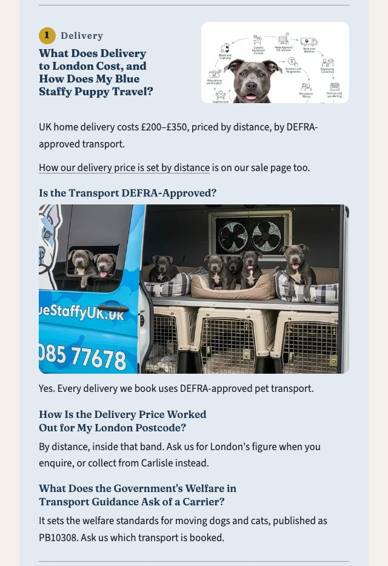</a><figcaption>Before, 640px: the question takes 4 lines in half the tray (244px)</figcaption></figure><figure><a href="fixa-640-after.jpg">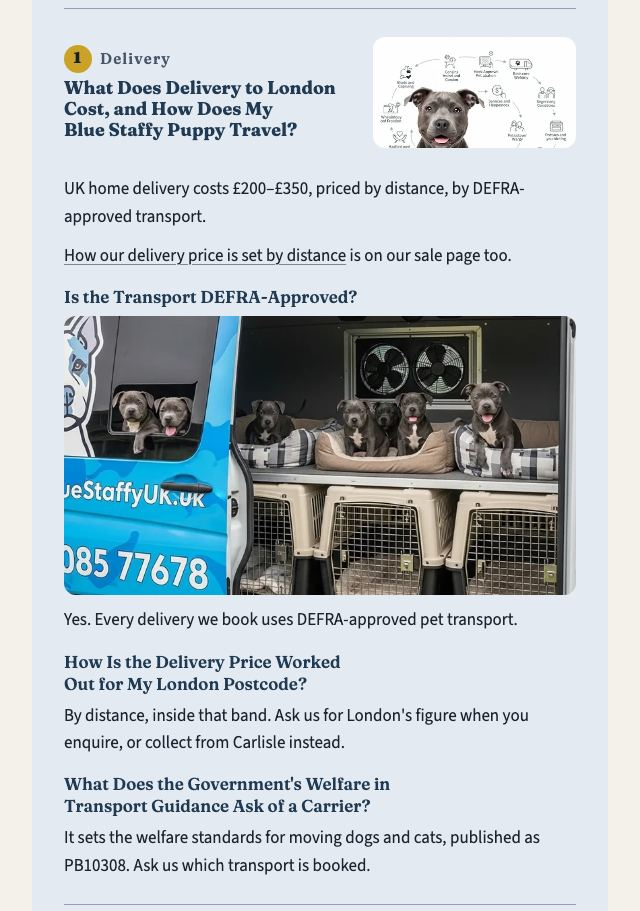</a><figcaption>FIX-a, 640px: 7 : 5 columns give the heading 291px, 3 lines; the photo is 203px</figcaption></figure></div>
    <div class="pair"><figure><a href="fixa-1024-before.jpg">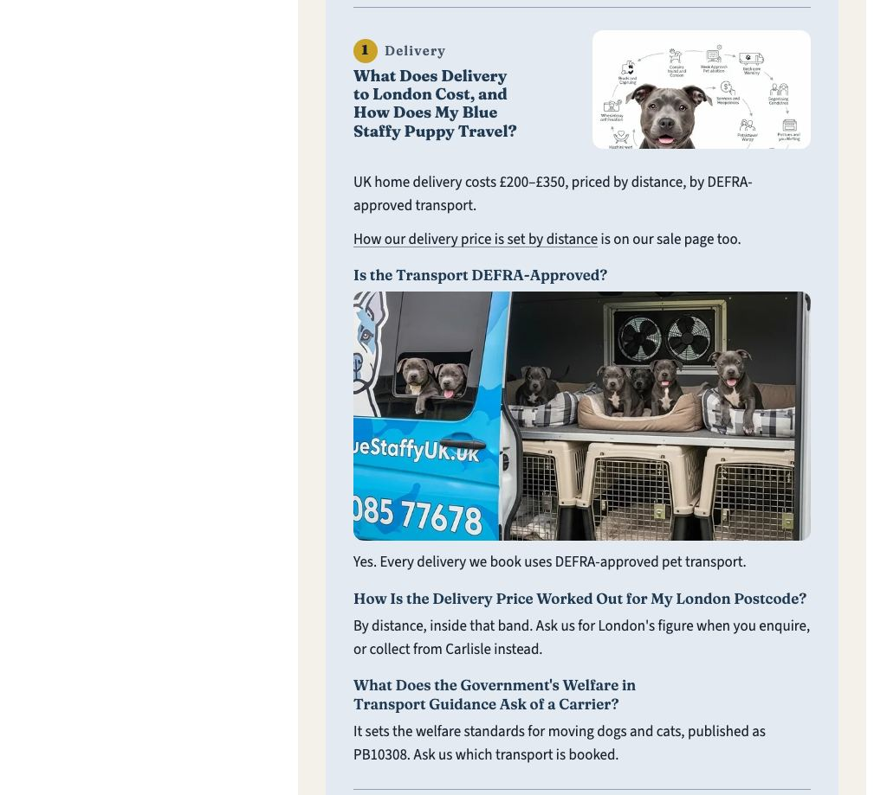</a><figcaption>Before, 1024px (656px column beside the dial): 4 lines</figcaption></figure><figure><a href="fixa-1024-after.jpg">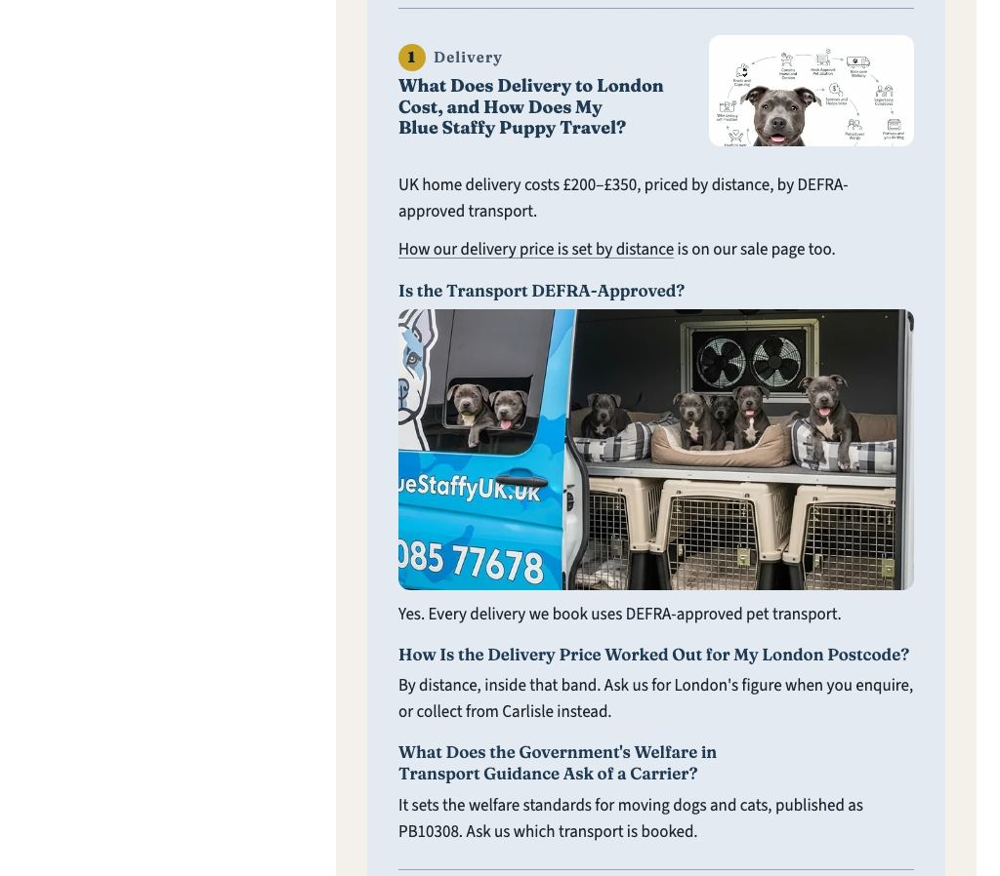</a><figcaption>FIX-a, 1024px: 3 lines</figcaption></figure></div>
    <p><b>Cause.</b> From a 640px box, D1 puts the numeral and the H3 beside the photo in two equal columns, and D7's 32px inset narrows the tray. In the tablet tier (a 640–799px box) the heading column is 244–258px, and an 18px Fraunces question of about 75 characters needs four lines there. <b>Fix.</b> Split the tablet tier 7 : 5 instead of 1 : 1. That is one value, plus the photo's <code>sizes</code>. <b>Gate effect (measured).</b> Both questions drop to 3 lines at 640, 660, 667 and in the 1024 column, so the row passes. At 768 they go from 3 lines to 2. <b>Trade-off.</b> The chapter photo in that tier shrinks from 244px to 203px. Alternatives measured: a 24px tray inset (also 3 lines, but it undoes the approved D7 gutter), or the H3 at 17px (still 4 lines at 640).</p>
    <details class="diff"><summary>The exact diff (FIX-a)</summary><button class="copy" type="button" data-copy>Copy markdown</button><pre>## FIX-a: the two chapter questions that wrap to four lines at 640 and 1024 (Recommended)

`src/components/kit/CityChapters.astro`, in the `@container (width &gt;= 640px)` block (the
`&gt;= 800px` block still sets its own `1fr / 340px`):

```diff
       .ch {
-        grid-template-columns: minmax(0, 1fr) minmax(0, 1fr);
+        /* 7 : 5, not 1 : 1 (London previews 2026-10-04, FIX-a): in the 656px column beside the dial
+           and at 640-667px a long question took 4 lines in half the tray; seven-twelfths holds it to 3. */
+        grid-template-columns: minmax(0, 7fr) minmax(0, 5fr);
```

and the photo&#x27;s `sizes`, in the same file, the tablet term:

```diff
-  tablet: (B) =&gt; `calc((min(${B}, 1164px) - 152px) / 2)`,
+  tablet: (B) =&gt; `calc((min(${B}, 1164px) - 152px) * 5 / 12)`,
```

(Measured photo width with the fix: 203px at 640, 210px in the 656px column, 257px at 768.
The formula gives 203, 210 and 257.)</pre></details>
  </article>

  <article class="opt rec">
    <h3>FIX-b · The H1 wraps to four lines at 375 (and at 1024) <span class="badge">Recommended</span></h3>
    <div class="pair"><figure><a href="fixb-375-before.jpg">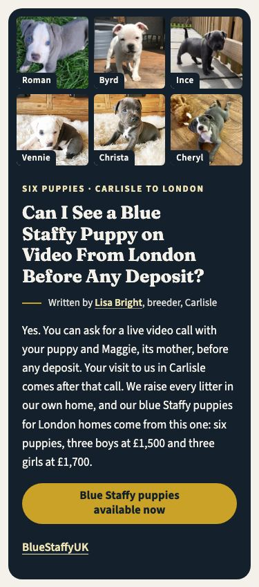</a><figcaption>Before, 375px: 26px H1 in 311px, 4 lines</figcaption></figure><figure><a href="fixb-375-after.jpg">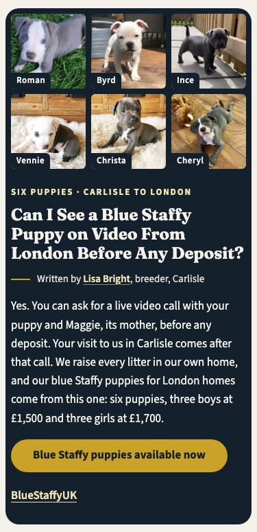</a><figcaption>FIX-b, 375px: 24px H1 in 343px, 3 lines; the band is 73px shorter</figcaption></figure></div>
    <div class="pair"><figure><a href="fixb-1024-before.jpg">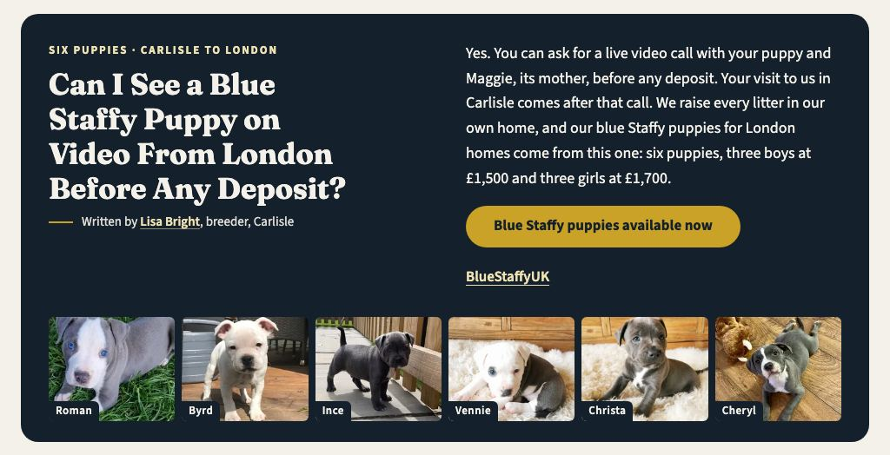</a><figcaption>Before, 1024px: 34px H1 in a 432px column, 4 lines</figcaption></figure><figure><a href="fixb-1024-after.jpg">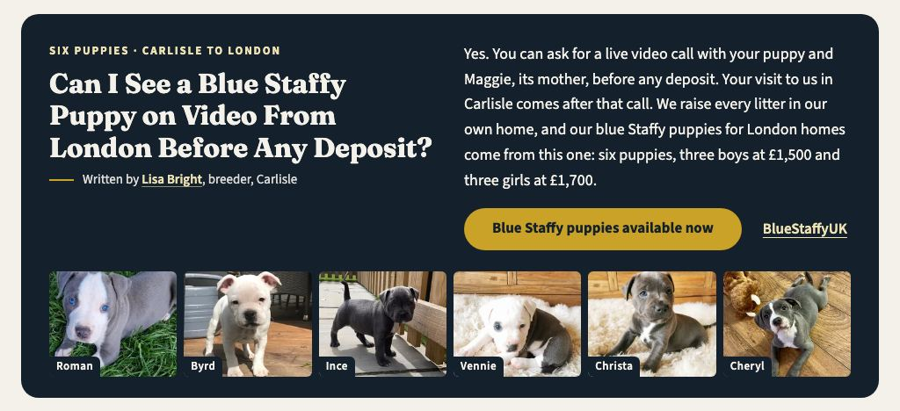</a><figcaption>FIX-b, 1024px: 31px (the desktop tier’s own floor), 32px gutter, 3 lines; the lede stays at 6 lines</figcaption></figure></div>
    <p><b>Cause.</b> On a phone the H1 has 311px: the panel is set 12px in, has 12px of padding, and the copy adds another 8px inset. At 26px, the 71-character board-picked H1 needs four lines, and its wording is final. At 1024 the two copy columns give it 432px at 34px. <b>Fix.</b> On phones, an 8px panel inset and padding with no copy inset, and the H1 at 24px (still above the phone H2's 22px). From 1024 to 1199, the H1 at 31px with a 32px gutter. <b>Gate effect (measured).</b> 3 lines at 375, 390, 414 and 430, and at 1024 and 1100, so the row passes. At 360px it is still 4 lines, but the gate does not measure 360. The lede stays within its 6-line cap at 1024; a 1.25fr column was tried and pushed it to 7. <b>Trade-off.</b> The hero panel sits 8px from the screen edge instead of 12px, and the phone H1 now outranks the H2 by only 2px; the steel band and its position carry the rest of the hierarchy. Alternative: 23px with only the copy inset removed (3 lines at 375, 1px above the H2).</p>
    <details class="diff"><summary>The exact diff (FIX-b)</summary><button class="copy" type="button" data-copy>Copy markdown</button><pre>## FIX-b: the H1 wraps to four lines at 375 (and at 1024) (Recommended)

`src/components/kit/CityHeroFilmstrip.astro`, inside `@layer components`:

```diff
+    /* THE H1 FITS THREE LINES ON A PHONE (London previews 2026-10-04, FIX-b): the panel sits 8px
+       in from the screen with 8px of padding and the copy loses its own 8px inset, so the H1 gets
+       343px of the 375px screen, not 311px; at 24px (2px over the phone H2&#x27;s 22px) it takes three lines. */
+    @media (width &lt; 640px) {
+      .inner { max-width: calc(100% - 2 * var(--space-2)); padding: var(--space-2); }
+      .copy { padding-inline: 0; }
+      .title { font-size: 24px; }
+    }
     @media (1024px &lt;= width &lt; 1200px) {
       .pic :global(img) { height: 120px; }
+      /* 1024-1199: the H1 column is 432px at 1024; the desktop tier&#x27;s own floor (31px) and a 32px
+         gutter hold it to 3 lines without stretching the lede past 6. */
+      .copy { column-gap: var(--space-6); }
+      .title { font-size: 31px; }
     }
```

and the strip&#x27;s phone `sizes` term (the thumbs grow by about 5px):

```diff
-  + &#x27;(min-width: 640px) calc(16.667vw - 14.667px), calc(33.333vw - 21.333px)&#x27;;
+  + &#x27;(min-width: 640px) calc(16.667vw - 14.667px), calc(33.333vw - 16px)&#x27;;
```</pre></details>
  </article>

  <article class="opt rec">
    <h3>FIX-c · The hero band is 18px over its 450px ceiling at 1280 <span class="badge">Recommended</span></h3>
    <div class="pair"><figure><a href="fixc-1280-before.jpg">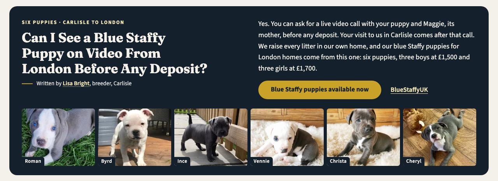</a><figcaption>Before, 1280px: band 468px</figcaption></figure><figure><a href="fixc-1280-after.jpg">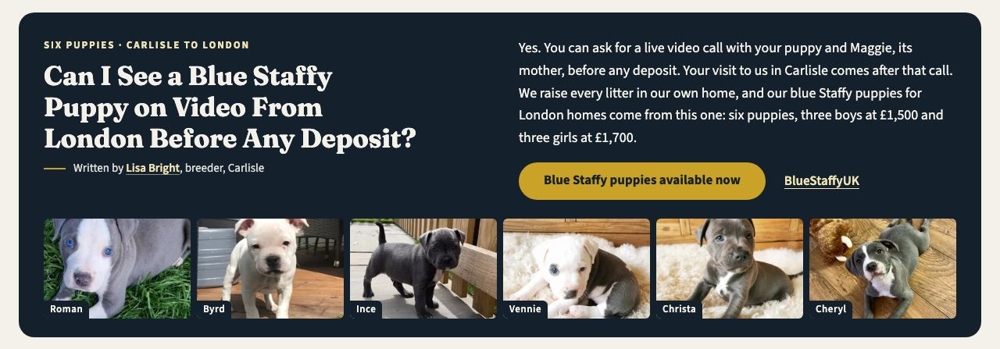</a><figcaption>FIX-c, 1280px: band 448px, strip thumbs 128px tall</figcaption></figure></div>
    <p><b>Cause.</b> The copy row is 208px, set by the lede's five lines (the right-hand column), not by the H1. Add the 148px strip, the 24px gap and 56px of padding and the band comes to 468px. <b>Fix.</b> The strip thumbs go from 148px to 128px tall. rules/design.md rule 10 says "the photo is what the clamp crops", so the copy keeps its space. <b>Gate effect (measured).</b> 448px at 1280 and 1440, so the row passes with 2px to spare (130px would make it exactly 450). <b>Trade-off.</b> The six faces are 20px shorter (still face-cropped, and the name plates are unchanged). Alternatives measured: less padding (452px, still over), and widening the lede column to 7fr (495px, worse: the H1 goes to 4 lines).</p>
    <details class="diff"><summary>The exact diff (FIX-c)</summary><button class="copy" type="button" data-copy>Copy markdown</button><pre>## FIX-c: the hero band is 18px over its 450px ceiling at 1280 (Recommended)

`src/components/kit/CityHeroFilmstrip.astro`, in the `@media (width &gt;= 1024px)` block:

```diff
-      .pic :global(img) { aspect-ratio: auto; height: 148px; }
+      /* 128px, not 148 (London previews 2026-10-04, FIX-c): the band measured 468px at 1280 and 1440;
+         rule 10 says the photo is what the clamp crops, so the strip gives up the 20px, not the copy. */
+      .pic :global(img) { aspect-ratio: auto; height: 128px; }
```

(1024–1199 keeps its own 120px rule. Re-run `scripts/measure_canvas_heights.mjs` and
`tests/py/test_design_components.py::test_measured_hero_fits_its_clamp_without_clipping_anything`.)</pre></details>
  </article>

  <article class="opt">
    <h3>FIX-d · Chapter sections over the height cap: no visual-only fix exists</h3>
    <div class="pair"><div class="bars" role="img" aria-label="375px section heights"><p class="bars-t">375px section heights: cap 2030px</p><div class="bar"><span class="bk">deposit-viewing</span><span class="bt"><span class="bf over" style="width:100.0%"></span><span class="cap" style="left:38.8%"></span></span><span class="bv">5,234 over</span></div><div class="bar"><span class="bk">delivery</span><span class="bt"><span class="bf over" style="width:64.9%"></span><span class="cap" style="left:38.8%"></span></span><span class="bv">3,395 over</span></div><div class="bar"><span class="bk">litter-prices</span><span class="bt"><span class="bf over" style="width:93.9%"></span><span class="cap" style="left:38.8%"></span></span><span class="bv">4,913 over</span></div><div class="bar"><span class="bk">health-tests</span><span class="bt"><span class="bf over" style="width:75.4%"></span><span class="cap" style="left:38.8%"></span></span><span class="bv">3,949 over</span></div><div class="bar"><span class="bk">paperwork</span><span class="bt"><span class="bf over" style="width:46.5%"></span><span class="cap" style="left:38.8%"></span></span><span class="bv">2,433 over</span></div><div class="bar"><span class="bk">london-life</span><span class="bt"><span class="bf over" style="width:93.1%"></span><span class="cap" style="left:38.8%"></span></span><span class="bv">4,874 over</span></div><div class="bar"><span class="bk">temperament</span><span class="bt"><span class="bf" style="width:34.4%"></span><span class="cap" style="left:38.8%"></span></span><span class="bv">1,801</span></div><div class="bar"><span class="bk">breed</span><span class="bt"><span class="bf over" style="width:61.8%"></span><span class="cap" style="left:38.8%"></span></span><span class="bv">3,235 over</span></div><div class="bar"><span class="bk">everyday-health</span><span class="bt"><span class="bf" style="width:24.6%"></span><span class="cap" style="left:38.8%"></span></span><span class="bv">1,287</span></div></div><div class="bars" role="img" aria-label="1280px section heights"><p class="bars-t">1280px section heights: cap 1280px</p><div class="bar"><span class="bk">deposit-viewing</span><span class="bt"><span class="bf over" style="width:77.0%"></span><span class="cap" style="left:28.7%"></span></span><span class="bv">3,437 over</span></div><div class="bar"><span class="bk">delivery</span><span class="bt"><span class="bf over" style="width:65.8%"></span><span class="cap" style="left:28.7%"></span></span><span class="bv">2,936 over</span></div><div class="bar"><span class="bk">litter-prices</span><span class="bt"><span class="bf over" style="width:100.0%"></span><span class="cap" style="left:28.7%"></span></span><span class="bv">4,463 over</span></div><div class="bar"><span class="bk">health-tests</span><span class="bt"><span class="bf over" style="width:63.4%"></span><span class="cap" style="left:28.7%"></span></span><span class="bv">2,831 over</span></div><div class="bar"><span class="bk">paperwork</span><span class="bt"><span class="bf over" style="width:46.3%"></span><span class="cap" style="left:28.7%"></span></span><span class="bv">2,067 over</span></div><div class="bar"><span class="bk">london-life</span><span class="bt"><span class="bf over" style="width:84.4%"></span><span class="cap" style="left:28.7%"></span></span><span class="bv">3,765 over</span></div><div class="bar"><span class="bk">temperament</span><span class="bt"><span class="bf over" style="width:38.3%"></span><span class="cap" style="left:28.7%"></span></span><span class="bv">1,711 over</span></div><div class="bar"><span class="bk">breed</span><span class="bt"><span class="bf over" style="width:42.2%"></span><span class="cap" style="left:28.7%"></span></span><span class="bv">1,883 over</span></div><div class="bar"><span class="bk">everyday-health</span><span class="bt"><span class="bf over" style="width:29.6%"></span><span class="cap" style="left:28.7%"></span></span><span class="bv">1,322 over</span></div></div></div>
    <p><b>Cause.</b> The gate holds each whole <code>CityChapters</code> section (one H2) to 2.5 viewports on a phone and 1.6 at 1280. The approved outline gives each H2 a photo, up to three H3 answers each with its own photo (rule 17), and under each answer an H4–H6 ladder. At 375, 7 of 9 chapter sections are over the cap, and so is the London places list, which is its own section. At 1280, 9 of 9 are over. Paperwork and breed went over on phones when the approved phone infographics went in: the breed infographic is 1,755px tall on a phone and the paperwork one 660px. <b>Upper bound of any CSS fix (measured).</b> Even with every ladder hidden behind a disclosure, 6 of 9 sections stay over at 375 and 8 of 9 at 1280. No styling change passes this row without removing words. <b>Options:</b></p>
    <ol>
      <li><b>d-1 (Recommended): a ruling to measure height per chapter (one H3 answer), not per H2 section.</b> This matches how the outline was approved: an H2 holds up to three answers by design. Measured per chapter, 3 rows remain at each width. At 375: the deposit video-call answer is 2,064px (34 over), the London-life answer with the places list is 3,753px, and the breed-standards answer is 2,086px because of its phone infographic. At 1280: the deposit answer is 1,288px (8 over), litter prices 1,872px and London life 2,570px. Trade-off: it relaxes a gate, and three answers would still need their own small follow-ups.</li>
      <li><b>d-2: split the long H2 sections into more H2s.</b> No words change, but the outline does, which means going back to STOP 2. It also gives the jump nav and the dial more entries.</li>
      <li><b>d-3: serve the desktop (landscape) infographic on phones.</b> Measured: paperwork drops to 1,942px and breed to 1,649px, so the two rows that went over when the phone infographics went in both pass. Trade-off: it undoes the six phone infographics approved at the Asset Gate (2026-10-04 q01), and their lettering becomes too small to read on a phone.</li>
      <li><b>d-4: collapse each chapter's ladder behind a disclosure.</b> Not enough (see the upper bound above). It also adds a UI label, hides answers, and pulls against the page's AEO intent.</li>
    </ol>
  </article>
</section>

<section id="gate">
  <h2>Gate summary, measured on the injected dist copy</h2>
  <table class="stack-table">
    <thead><tr><th>Row</th><th>Before</th><th>With the recommended fix</th><th>Passes?</th></tr></thead>
    <tbody>
      <tr><td data-label="Row">H3 "What Does Delivery to London Cost…" / "Is My Blue Staffy Puppy Microchipped…"</td><td data-label="Before">4 lines at 640, 660, 1024 (and 667 for the first)</td><td data-label="With fix">3 lines at 640, 660, 667, 1024; 2 at 768</td><td data-label="Passes?">Yes (FIX-a)</td></tr>
      <tr><td data-label="Row">H1 lines</td><td data-label="Before">4 at 375, 390 and 1024</td><td data-label="With fix">3 at 375, 390, 1024, 1100</td><td data-label="Passes?">Yes (FIX-b); 4 at 360, which is not gated</td></tr>
      <tr><td data-label="Row">Hero band ceiling at 1280</td><td data-label="Before">468px</td><td data-label="With fix">448px (also at 1440)</td><td data-label="Passes?">Yes (FIX-c)</td></tr>
      <tr><td data-label="Row">Chapter section heights</td><td data-label="Before">7 chapters + places over at 375; 9 + places over at 1280</td><td data-label="With fix">Unchanged</td><td data-label="Passes?">No: needs a ruling (FIX-d)</td></tr>
      <tr><td data-label="Row">Everything with a+b+c applied</td><td data-label="Before">375: 9 defects · 1024: 3 · 1280: 11</td><td data-label="With fix">375: 8 · 640/660/667: 6 · 768: 0 · 1024: 0 · 1100–1199: 0 · 1280: 10, every one of them a section-height row</td><td data-label="Passes?">Only the height rows remain</td></tr>
    </tbody>
  </table>
  <p class="small">Method: <code>npm run -s build</code> once, then <code>dist/</code> copied to <code>/private/tmp/claude-501/london-preview-dist</code> and served on 127.0.0.1:4472. The city spec was run against that copy, and the preview states were injected with Playwright. The gate's own <code>cityTypeFit</code> was imported from <code>tests/render/lib/</code> and run in the page, along with the hero probe's 390/450 test. The CTA, card and fix states each re-ran it.</p>
</section>
</main>
<script>
document.querySelectorAll('[data-copy]').forEach(function (b) {
  b.addEventListener('click', function () {
    var t = b.parentElement.querySelector('pre').textContent;
    var done = function () { var o = b.textContent; b.textContent = 'Copied'; setTimeout(function () { b.textContent = o; }, 1400); };
    try { navigator.clipboard.writeText(t).then(done, done); } catch (e) { done(); }
  });
});
</script>
